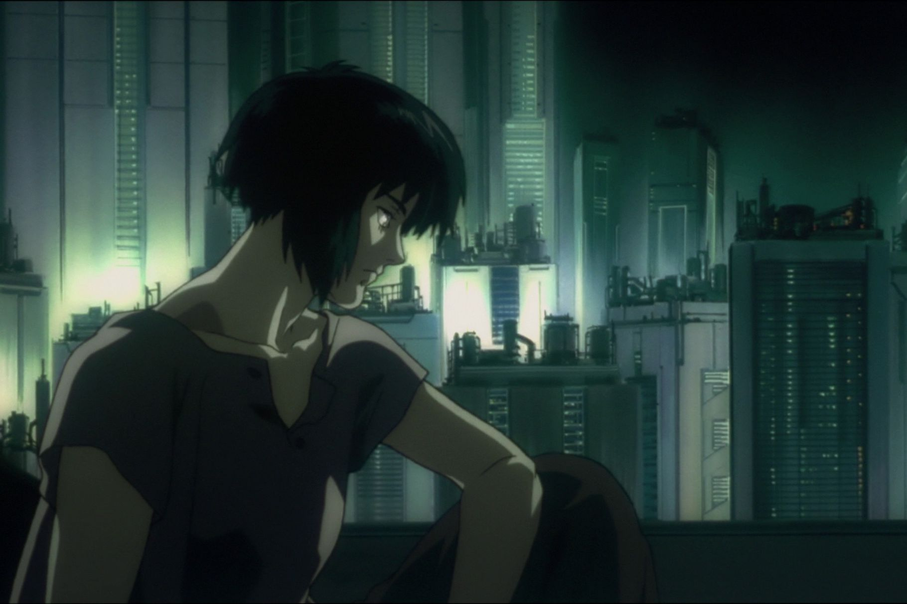

Depiction of Future in Ghost in the Shell
The image is taken from Vox
Ghost in the Shell is created by Masamune Shirow in 1989 and had multiple different reimaginings from different creator since then. The most popular of these reimaginings is the 1995 animated film from Mamoru Oshii, which changed the people's perspective on what animated movies could be. Even though that movie is the most popular one, all different versions of Ghost in the Shell deal with similar concepts. Ghost in the shell takes place in a future where everyone has cybernetic implants on their brains and are constantly connected to the internet through their brains. Body alterations, cyborgs and autonomous androids are also common in this future. The series follows Section 9, an elite police squad which works on crimes that regular police won't be proficient on. The cases they work on generally involve cyber crimes and mind hacking. Since everyone is constantly connected to the internet through their brains, their minds can be hacked.
The thing I love most about Ghost in the Shell, especially the Stand Alone Complex series, is that it doesn't treat its world like a utopia or a dystopia. It just presents every idea like a normal thing, which makes its world very believable.